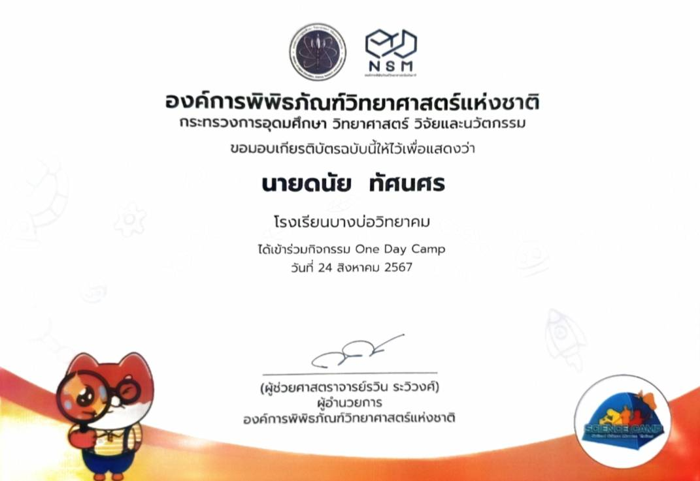
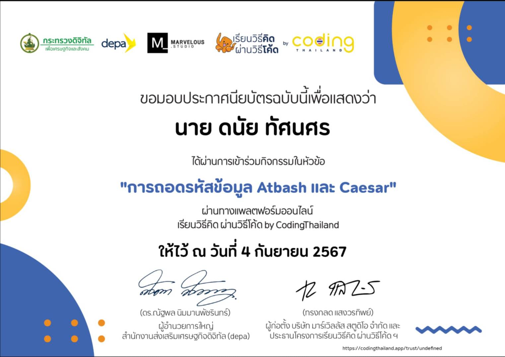
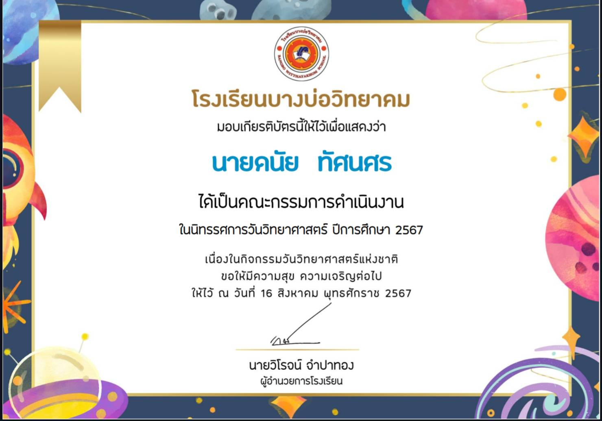
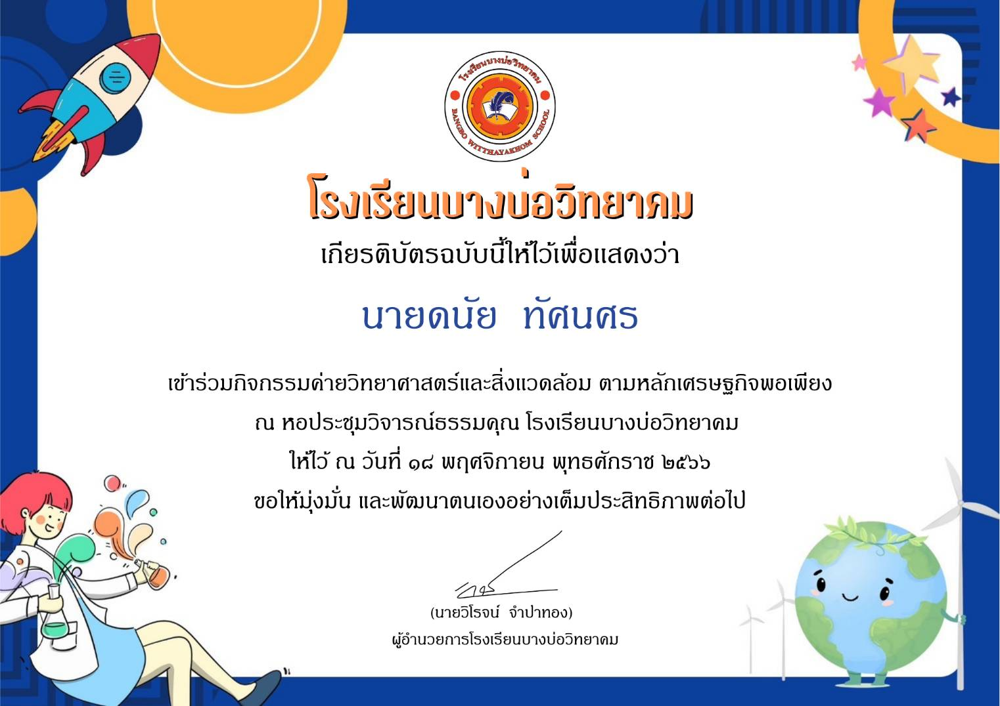
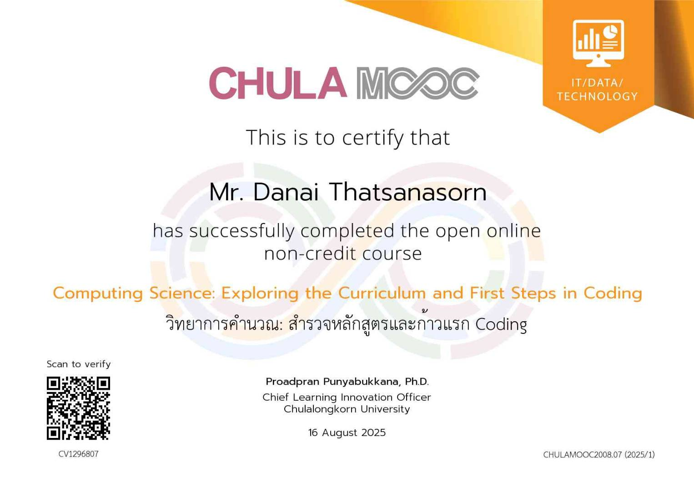
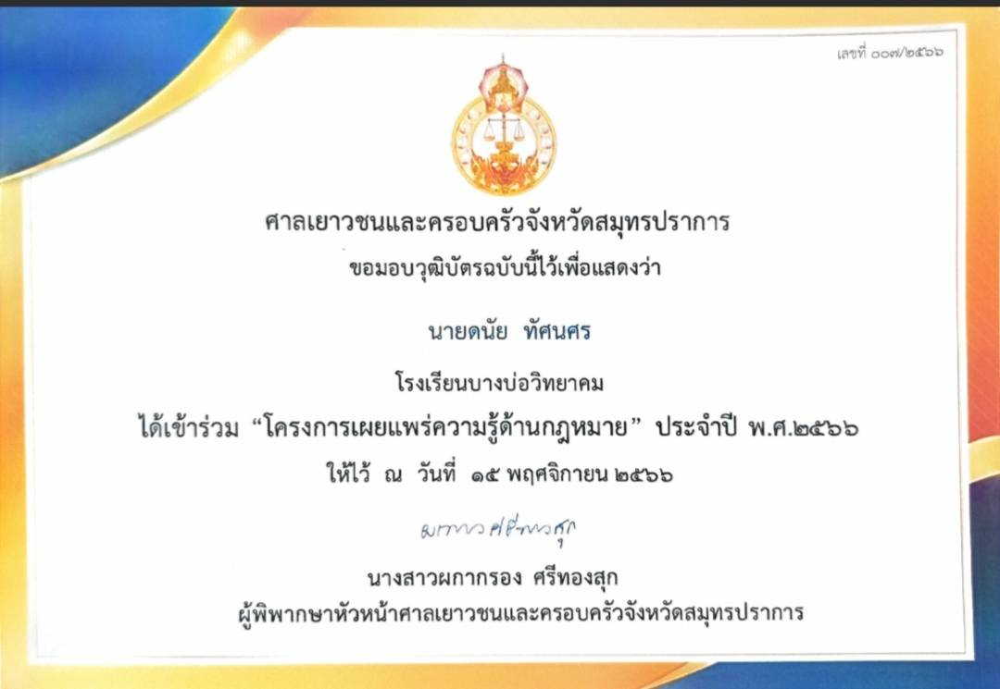

ประวัติส่วนตัว
Name: Danai Thatsanasorn
ชื่อ: นายดนัย ทัศนศร
ชื่อเล่น: เบียร์
วันเกิด: 21 ตุลาคม พ.ศ. 2549
สัญชาติ: ไทย เชื้อชาติ: ไทย ศาสนา: พุทธ
หมู่โลหิต: กรุ๊ป B
แผนการเรียน: วิทย์-คณิต
เป้าหมายและเหตูผล
กระผมนายดนัย ทัศนศร นักเรียนชั้นมัธยมศึกษาปีที่ 6 โรงเรียนบางบ่อวิทยาคม มีความตั้งใจอย่างยิ่งที่จะศึกษาต่อในระดับอุดมศึกษา คณะวิทยาศาสตร์และเทคโนโลยี สาขาวิทยาการคอมพิวเตอร์ มหาวิทยาลัยเทคโนโลยีราชมงคลธัญบุรี (Rajamangala University of Technology Thanyaburi – RMUTT)
กระผมตระหนักดีว่าเทคโนโลยีคือหัวใจสำคัญของโลกยุคปัจจุบัน การเรียนในมหาวิทยาลัยที่มีหลักสูตรทันสมัยและเน้นการเรียนรู้จากการปฏิบัติจริง จะช่วยพัฒนาศักยภาพและทักษะของกระผมได้อย่างรอบด้าน โดยเฉพาะในด้านการพัฒนาเว็บไซต์ การพัฒนาซอฟต์แวร์ ความปลอดภัยทางไซเบอร์ และการประยุกต์ใช้เทคโนโลยีในโลกแห่งความจริง ซึ่งล้วนเป็นพื้นฐานที่จำเป็นต่อการทำงานในสายอาชีพนี้
ในช่วงมัธยมปลาย กระผมให้ความสำคัญกับการเรียนในวิชาวิทยาศาสตร์ คณิตศาสตร์ และวิทยาการคำนวณ ซึ่งเป็นรากฐานสำคัญของสาขาที่เลือกเรียน นอกจากนี้กระผมยังเข้าร่วมกิจกรรมและโครงการเสริมความรู้ เช่น การเข้าค่าย Code in Place การเข้าชุมนุมคอมพิวเตอร์ และการทำโปรเจกต์ส่วนตัวโดยใช้บอร์ด ESP32-C3 เพื่อสร้างเครื่องแจ้งเตือนสิ่งของผ่าน LINE Notify ซึ่งช่วยพัฒนาทักษะการคิดเชิงวิเคราะห์และการแก้ปัญหา อีกทั้งกระผมยังได้ฝึกเขียนเว็บไซต์พอร์ตโฟลิโอด้วย HTML, CSS และ JavaScript เพื่อใช้เป็นจุดเริ่มต้นสู่การเป็นนักพัฒนาเว็บไซต์ (Website Developer)
เป้าหมายของกระผมหลังสำเร็จการศึกษา คือการนำความรู้ที่ได้รับไปสร้างนวัตกรรมที่เป็นประโยชน์ต่อสังคม และทำงานในตำแหน่งนักพัฒนาเว็บไซต์ในองค์กรที่มีศักยภาพ กระผมพร้อมทุ่มเททั้งแรงกายและแรงใจ เพื่อสร้างผลงานที่มีคุณค่าและมีส่วนในการขับเคลื่อนวงการเทคโนโลยีของประเทศให้ก้าวไกลต่อไปในอนาคต
ผลงานดีเด่น
Anti-Forget Tracker
- กระผมได้ทำเครื่องแจ้งเตือนสิ่งของ (Anti-Forget Tracker) โดยใช้บอร์ด ESP32-C3 Super Mini เป็นตัวส่งสัญญาณไปยัง Line Notify เพื่อแจ้งเตือนในโทรศัพท์มือถือ โครงงานนี้สามารถนำไปต่อยอดเพื่อพัฒนาระบบรักษาความปลอดภัย ระบบติดตามของหาย หรือระบบอัจฉริยะภายในบ้าน (Smart Home) ซึ่งช่วยเพิ่มความสะดวกและปลอดภัยให้กับผู้ใช้งานได้เป็นอย่างดี นอกจากนี้ ท่านสามารถอ่านรายงานฉบับเต็มของผลงานนี้ผ่าน รายงานโครงงาน และสามารถรับชมคลิปวิดีโอผลงานที่กระผมรับหน้าที่ตัดต่อและให้เสียงพากย์ บนแอปพลิเคชัน TikTokและ Youtuberช่อง ครูทินกร
MvCover "พื้นที่ทับซ้อน"
- กระผมได้ตัดต่อ MV Cover เพลง พื้นที่ทับซ้อนของ Boy Peacemaker ซึ่งเป็นผลงานที่กระผมภาคภูมิใจที่สุดชิ้นงานนี้ช่วยฝึกทั้งทักษะการตัดต่อ การทำงานเป็นทีม และการคิดอย่างเป็นขั้นตอน ผลงานสามารถรับชมได้ผ่านลิงค์นี้พื้นที่ทับซ้อนในแอปพลิเคชัน TikTok
See You again
- กระผมได้รับแรงบันดาลใจจากคลิปวิดีโอที่ตัดต่อในสไตล์ภาพยนตร์ Fast & Furious จึงชวนน้อง ๆ มาร่วมถ่ายทำ และกระผมรับหน้าที่กำกับการแสดง ถ่ายทำ และตัดต่อวิดีโอด้วยตนเอง ผลงานนี้ถือเป็นจุดเริ่มต้นของการฝึกตัดต่อวิดีโอของกระผม ท่านสามารถรับชมได้ผ่าน Instagram ของกระผม
กิจกรรม
เข้าร่วมโครงการ code in place
- กระผมได้มีโอกาสเข้าร่วมกิจกรรมที่องค์การพิพิธภัณฑ์วิทยาศาสตร์แห่งชาติ (ตึกลูกเต๋า) โดยได้เรียนรู้แนวคิดทางวิทยาศาสตร์ การถอดรหัส และการคิดอย่างเป็นขั้นตอน ผ่านการเล่นเกมกระดานและกิจกรรมเชิงปฏิบัติ ซึ่งช่วยพัฒนาทักษะการแก้ปัญหา การวางแผน และการทำงานร่วมกับผู้อื่น ประสบการณ์นี้เป็นพื้นฐานสำคัญที่สามารถต่อยอดสู่การเรียนด้านเทคโนโลยีและการพัฒนาโครงงานในอนาคต
กิจกรรมวันวิทยาศาสตร์
- กระผมได้ทำไอติมหลอดขายในโรงเรียน โดยใช้หลักการวิทยาศาสตร์เอาเกลือใส่น้ำ เพื่อให้น้ำอุณหภูมิที่ลดลงจนถึงจุดเยือกแข็ง จนทำให้น้ำหวานในหลอดกลายเป็นน้ำแข็ง
กิจกรรมวันกีฬาสี
- กระผมมีหน้าที่ยกบายศรี รวมถึงออกแบบและจัดทำ Prop ประกอบภายในงาน ซึ่งช่วยพัฒนาทักษะการทำงานร่วมกัน ความคิดสร้างสรรค์ และความรับผิดชอบต่อหน้าที่ที่ได้รับ

กิจกรรมวิทย์ติดเลนส์
- กระผมได้เข้าร่วมการประกวดภาพยอดนิยมในกิจกรรมวิทย์ติดเลนส์โดยภาพที่ส่งเข้าประกวดถ่ายที่สวนเบญจกิติภาพนี้สะท้อนมุมมองด้านวิทยาศาสตร์ผ่านเลนส์กล้องและเป็นผลงานที่กระผมภาคภูมิใจอย่างยิ่ง
กิจกรรมวันคริสต์มาส
- กระผมได้รับเกียรติเป็นตัวแทนระดับชั้นขึ้นแสดงละครวันคริสต์มาสและรับบทเป็นซานตาคลอสซึ่งช่วยพัฒนาทักษะการแสดงความมั่นใจและการทำงานร่วมกับผู้อื่น
กิจกรรมวันปัจฉิมนิเทศ
- กระผมได้รับเกียรติเป็นตัวแทนระดับชั้นในการทำกิจกรรมซุ้มธง เพื่อส่งนักเรียนชั้น ม.3 และ ม.6 จบการศึกษาอย่างสมเกียรติ
กิจกรรมวันวิทยาศาสตร์
- กระผมได้ร่วมแข่งขันเดินแบบชุดแฟนตาซีกับเพื่อนในธีมรูปปั้นเทพเจ้ากรีก-โรมันซึ่งช่วยฝึกความคิดสร้างสรรค์การทำงานเป็นทีม และความมั่นใจในการแสดงออก
กิจกรรมภาษาไทย
- กระผมได้เข้าร่วมการออดิชั่นละครเรื่องนางกากี โดยรับบทเป็นท้าวพรหมทัตแม้จะไม่ผ่านการคัดเลือก แต่กระผมได้ทุ่มเทแสดงอย่างเต็มที่และได้รับประสบการณ์ที่มีคุณค่า ท่านสามารถรับชมคลิปการออดิชั่นได้ผ่าน คลิปออดิชั่น
กิจกรรมจิตอาสา
- กระผมได้มีโอกาสร่วมทำกิจกรรมจิตอาสา โดยช่วยกวาดเศษใบไม้และเก็บขยะตามจุดต่าง ๆ ภายในโรงเรียน กิจกรรมนี้ช่วยปลูกฝังความรับผิดชอบต่อส่วนรวม และเสริมสร้างจิตสำนึกในการดูแลสิ่งแวดล้อม
เกียรติบัตร
เกียรติบัตรเข้าร่วมค่าย Code in place
เกียรติบัตรเข้าร่วมกิจกรรม การถอดรหัสข้อมูล Atbash และ Caesar
เกียรติบัตรคณะกรรมการ ดำเนินงานนิทรรศการ วันวิทยาศาสตร์
เกียรติบัตรเข้าร่วมกิจกรรม ค่ายวิทยาศาสตร์และสิ่งแวดล้อมตามหลักเศรษฐกิจพอเพียง
เกียรติบัตรคอร์สเรียน วิทยาการคำนวณ: สำรวจหลักสูตรและก้าวแรก Coding จุฬาลงกรณ์มหาวิทยาลัย
เกียรติบัตรเข้าร่วมอบรมกฎหมายเยาวชน โดยศาลเยาวชนและครอบครัวจังหวัดสมุทรปราการ